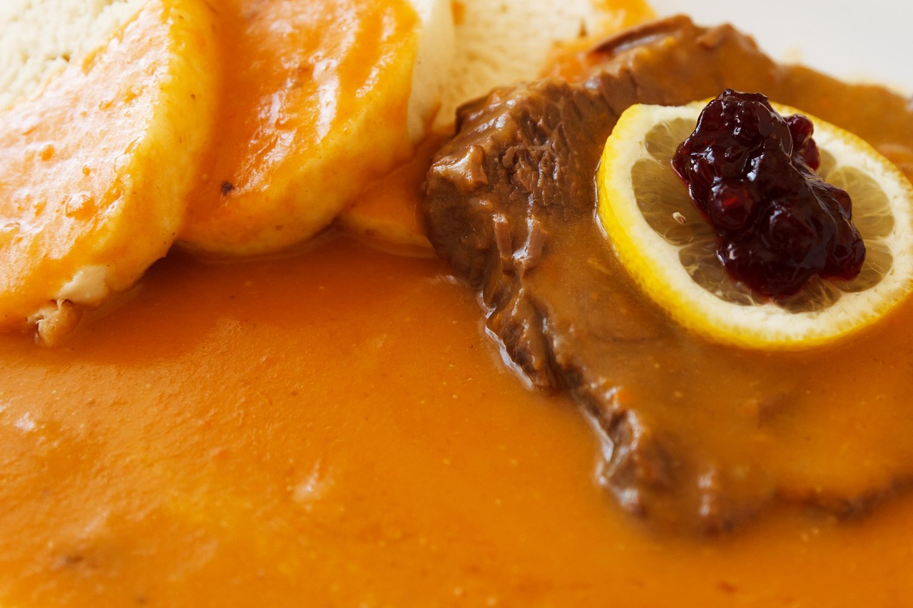

roast sirloin with sour cream and dumplings and cranberries
back

Description
Ingedients
- Beef
- Vegetables
- Fat bacib
- Apple
- Lard
- Butter
- Sugar
- Heavy Cream
- Vinegar
- Lemon juice
- Spices
Steps
- Lard the beef with stripes of bacon
Cut fat bacon into ⅓-inch thick and about 4-inch long pieces and put them into a freezer for 30 minutes to harden them.
Use a thin knife with a long edge and make some holes in the meat.
Stick your index finger inside each hole and wiggle it, so the hole enlarges.
You can make holes in both sides of the beef.
Once you have the holes ready, press in stripes of fat bacon.
- Prepare the vegetables and spices
Peel the carrot, parsley root, and celeriac, and dice them into ½-inch pieces.
Peel onions and chop them roughly. Peel an apple and dice it.
If possible, tie the spices tightly to a clean canvas; you will place the canvas with spices into a pot later.
- Brown the beef
In a large heavy pot, melt lard over higher heat and sear the beef from all sides until brown. Remove the browned meat and set it aside.
- Sauté the vegetables
Use the same pot that we used to prepare the meat. Reduce temperature to medium heat, and add butter and any leftover fat bacon from larding.
Add diced carrots, parsley roots, and celeriac. Cook until slightly golden, stirring occasionally.
- Add onions and apple
Throw chopped onions to vegetables, add a diced apple and cook for another 3-4 minutes, stirring frequently.
- Add sugar and vinegar
Add sugar, mix, and let it melt & caramelize while occasionally stirring. Count on 3-5 minutes.
Pour in vinegar, mix, and let vinegar evaporate while stirring, so that there are only vegetables with melted sugar and some fat on the bottom of the pot. It takes a few minutes. If the vinegar stayed in the vegetables, the sauce would taste too sour!
Add 1 teaspoon of salt and mix it.
- Return the browned beef to a pot
Return the browned beef to a pot with vegetables, and pour over hot water until you have the meat almost submerged.
Add 1 teaspoon of salt and spices.
Count the number of bay leaves if you add them to the pot freely! You need to remove them all later before the final mixing of svíčková sauce.
-
Bring to a boil, and reduce heat to a minimum. Cover with a lid and allow it to simmer for 2,5 hours until beef softens.
-
Remove the spices, especially all bay leaves. Remove ¼ of the vegetables and discard them. If you left all the vegetables in the sauce, svíčková would taste too much like the vegetables, and it would be too dense. Take out the beef and keep it in a warm place.
- Make the roux
-
Bring the pot back on a stove, and let it simmer for 15-20 minutes.
Stir occasionally because the roux tends to sit down and stick to the bottom of the pot.
The roux loses its floury taste after about 15 minutes of simmering. It thickens the sauce, whose texture will be very smooth and silky.
- Add heavy cream into the sauce and stir; no more cooking!
- Mix everything with an immersion blender and strain the sauce into a clean pot. Season with lemon juice and salt to your liking.
Serve with bread dumplings and a slice of beef.